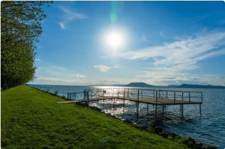
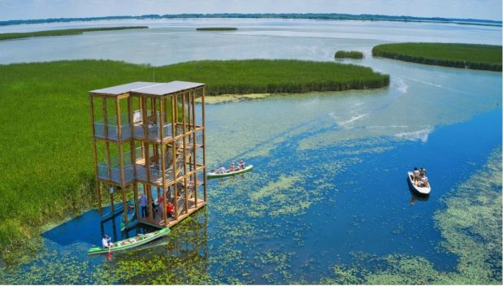
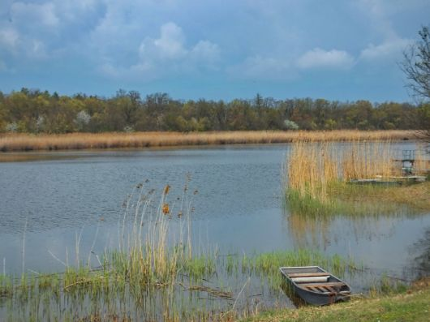

Kérem töltse ki a jelentkezési űrlapot
A Balaton

A Balaton Közép-Európa legnagyobb tava, Magyarország egyik legnépszerűbb üdülőhelye. Nyáron több ezer turista látogat el ide, hogy élvezze a napsütést és a vízpartot. A tó körül számos város és falu található, mint például Siófok, Balatonfüred és Keszthely. A Balaton északi partja dombosabb, míg a déli part sekélyebb és strandolásra kiváló. A tó vize nyáron kellemesen meleg, így kiváló fürdésre és vízi sportokra. Télen, ha befagy, korcsolyázásra és jégvitorlázásra is alkalmas. A környéken borászatok, kilátók és túraútvonalak is várják a látogatókat. A Balaton-felvidék természeti szépsége lenyűgöző és fotózásra is tökéletes. A tó kulturális eseményeknek és fesztiváloknak is otthont ad egész évben. A Balaton valóban Magyarország egyik legszebb és legkedveltebb vidéke.
A Tisza-tó

A Tisza-tó Magyarország második legnagyobb tava, a Tisza folyó duzzasztásával jött létre. A tó különlegessége, hogy mesterséges, de mégis gazdag élővilág alakult ki benne. A Tisza-tó kiváló hely horgászatra, csónakázásra és madármegfigyelésre. A vízpartot nádasok, kisebb szigetek és sekély öblök tagolják. Poroszlón található a Tisza-tavi Ökocentrum, ahol az élővilággal ismerkedhetnek a látogatók. A tó körüli kerékpárút népszerű a sportkedvelők körében. Nyáron strandolásra és vízi túrákra is lehetőség van. A természetkedvelők számára igazi paradicsom a környék. A Tisza-tó ökoturizmus szempontjából egyre népszerűbb célpont. Csendesebb, nyugodtabb alternatívát nyújt a Balatonhoz képest.
A Szelidi-tó

A Szelidi-tó Bács-Kiskun vármegyében található, Kalocsa közelében. Ez egy természetes eredetű tó, amely különleges, lúgos kémhatású vizéről ismert. A víz gyógyhatású, és kedvelt fürdőhely a nyári hónapokban. A tó partján homokos strand, éttermek és szálláshelyek várják a látogatókat. A környék csendes, családbarát környezetet kínál. A tó vízfelülete sekély, így ideális kisgyermekes családoknak is. Lehetőség van horgászatra és csónakázásra is. A Szelidi-tó Természetvédelmi Terület része, így gazdag növény- és madárvilággal büszkélkedhet. A nyári Szelidi-tavi Napok fesztivál sok látogatót vonz. A Szelidi-tó nyugalmat és kikapcsolódást nyújt a természet kedvelőinek.